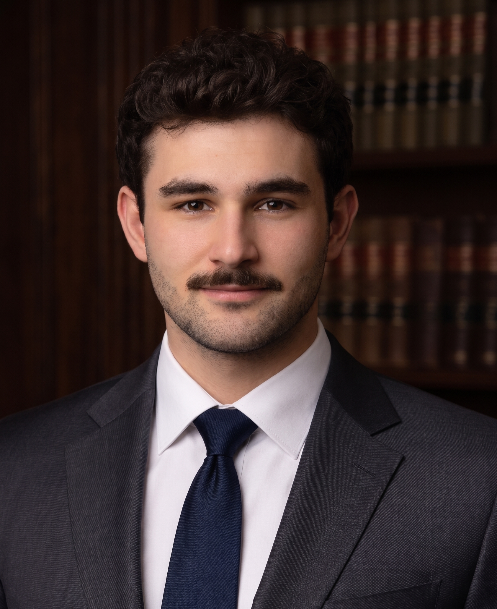

Alperen
Erkoc
Bridging the gap between creative vision and technical reliability. Using a designer's eye to spot UX flaws and an analytical discipline to ensure the safety and precision of autonomous systems.
Überbrückung der Lücke zwischen kreativer Vision und technischer Zuverlässigkeit. Mit dem Auge eines Designers, um UX-Schwächen zu erkennen, und einer analytischen Disziplin, um die Sicherheit autonomer Systeme zu gewährleisten.
Yaratıcı vizyon ile teknik güvenilirlik arasındaki köprüyü kuruyorum. UX hatalarını yakalamak için bir tasarımcı gözünü, otonom sistemlerin güvenliğini ve kusursuzluğunu sağlamak için ise analitik bir disiplini kullanıyorum.
Crafting aesthetic experiences from visual design to the perfect cup of coffee. Thriving in high-tempo environments with a focus on meticulous presentation and exceptional guest service.
Gestaltung ästhetischer Erlebnisse vom visuellem Design bis zur perfekten Tasse Kaffee. Erfolgreich in dynamischen Umgebungen mit Fokus auf sorgfältige Präsentation und erstklassigen Gästeservice.
Görsel tasarımdan mükemmel bir fincan kahveye kadar estetik deneyimler üretiyorum. Titiz bir sunuma ve olağanüstü misafir hizmetine odaklanarak yüksek tempolu ortamlarda fark yaratıyorum.
A highly adaptable builder and interdisciplinary thinker. Turning market analysis into rapid profitability and coordinating international events through flawless execution and a perfectionist drive.
Ein anpassungsfähiger Macher und interdisziplinärer Denker. Verwandelt Marktanalysen in schnelle Profitabilität und koordiniert internationale Events durch fehlerfreie Ausführung und Perfektionismus.
Yüksek adaptasyon yeteneğine sahip interdisipliner bir sistem kurucu. Kusursuz uygulama ve mükemmeliyetçi bir dürtüyle pazar analizini hızla kârlılığa dönüştürüyor ve uluslararası etkinlikleri koordine ediyorum.

About Me Über Mich Hakkımda
I am an interdisciplinary thinker and a relentless perfectionist. My unique trajectory—from visual design to testing live streaming systems for millions of users, and now training autonomous AI agents at SpaceX/xAI—proves my ability to learn rapidly and adapt to highly complex environments.
I don't just complete tasks; I execute them flawlessly. I utilize my background in design to critically evaluate User Experiences, whilst applying extreme analytical rigor honed through QA to guarantee the functional precision and safety of complex systems before they deploy.
Ich bin ein interdisziplinärer Denker und ein unermüdlicher Perfektionist. Mein einzigartiger Werdegang – vom visuellen Design über das Testen von Live-Streaming-Systemen für Millionen von Nutzern bis hin zum Training autonomer KI-Agenten bei SpaceX/xAI – beweist meine Fähigkeit, schnell zu lernen und mich an hochkomplexe Umgebungen anzupassen.
Ich erledige Aufgaben nicht nur; ich führe sie fehlerfrei aus. Ich nutze meinen Design-Hintergrund zur kritischen Bewertung von Nutzererlebnissen, während ich extreme analytische Strenge anwende, um die funktionale Präzision komplexer Systeme zu garantieren.
Ben interdisipliner düşünen, tavizsiz bir mükemmeliyetçiyim. Görsel tasarımdan milyonlarca kullanıcı için canlı yayın sistemlerini test etmeye, ve şimdi SpaceX/xAI'da otonom yapay zeka ajanlarını eğitmeye uzanan benzersiz yörüngem; çok karmaşık ortamlara hızla adapte olma ve öğrenme yeteneğimi kanıtlıyor.
Ben görevleri sadece tamamlamam; onları kusursuzca uygularım. Kullanıcı Deneyimini (UX) eleştirel bir şekilde değerlendirmek için tasarım altyapımı kullanırken, karmaşık sistemlerin canlıya çıkmadan önce işlevsel doğruluğunu ve güvenliğini garanti altına almak için QA sürecinde edindiğim aşırı analitik titizliği uygularım.
I bring an uncompromising standard of perfectionism and a highly adaptable mindset to the hospitality industry. Blending an aesthetic-driven background in design with the high-pressure reality of fine dining and specialty coffee, I understand that exceptional service is fundamentally about flawless execution and human connection.
I thrive in fast-paced, high-volume settings, combining rapid learning, a consistently positive demeanor, and multicultural communication skills. My goal is always to craft memorable, visually appealing, and welcoming experiences without missing a single detail.
Ich bringe einen kompromisslosen Perfektionismus und eine äußerst anpassungsfähige Denkweise in die Gastronomie ein. Durch die Verbindung meines ästhetischen Design-Hintergrunds mit der Realität der gehobenen Gastronomie und von Kaffeespezialitäten weiß ich, dass es bei exzellentem Service im Kern um fehlerfreie Ausführung und menschliche Verbindungen geht.
Ich arbeite erfolgreich in dynamischen Umgebungen und kombiniere schnelles Lernen, ein stets positives Auftreten und multikulturelle Kommunikationsfähigkeiten. Mein Ziel ist es immer, unvergessliche Erlebnisse zu schaffen, ohne auch nur ein einziges Detail zu übersehen.
Gastronomi sektörüne tavizsiz bir mükemmeliyetçilik standardı ve son derece uyarlanabilir bir zihniyet getiriyorum. Estetik odaklı tasarım altyapımı, fine-dining ve nitelikli kahve dünyasının yüksek basınçlı gerçekliğiyle harmanlayarak, olağanüstü hizmetin temelinde kusursuz icraat ve insan ilişkisi yattığını biliyorum.
Hızlı öğrenme, sürekli pozitif bir tutum ve çok kültürlü iletişim becerilerimi birleştirerek yüksek tempolu ortamlarda parlıyorum. Hedefim her zaman, tek bir detayı bile atlamadan unutulmaz, görsel olarak çekici ve misafirperver deneyimler yaratmaktır.
Driven by an entrepreneurial spirit and a perfectionist mindset, I am a fast learner who thrives in interdisciplinary environments. My proven ability to rapidly analyze market trends and execute strategies allowed me to launch and scale a highly profitable e-commerce venture, generating substantial net profit within just three months.
Whether I am negotiating premium physical media/camera sales or managing organization logistics for international sports events, I apply the same extreme adaptability. I am built to pivot efficiently, solve complex problems under pressure, and deliver exceptional, flawless results.
Angetrieben von Unternehmergeist und Perfektionismus bin ich ein schneller Lerner, der in interdisziplinären Umgebungen aufblüht. Meine Fähigkeit, Markttrends schnell zu analysieren, ermöglichte es mir, ein hochprofitables E-Commerce-Unternehmen aufzubauen, das innerhalb von nur drei Monaten beträchtliche Nettogewinne erzielte.
Egal, ob ich Verkäufe von Premium-Kameras verhandle oder groß angelegte Logistik für internationale Sport-Events leite, ich wende dieselbe extreme Anpassungsfähigkeit an. Ich bin darauf ausgelegt, komplexe Probleme unter Druck zu lösen und außergewöhnliche, fehlerfreie Ergebnisse zu liefern.
Girişimci bir ruh ve mükemmeliyetçi bir zihniyetle, interdisipliner ortamlarda parlayan, çok hızlı öğrenen biriyim. Pazar trendlerini hızla analiz edip stratejileri uygulama konusundaki kanıtlanmış yeteneğim, yüksek kârlı bir e-ticaret girişimi kurmamı ve sadece üç ay içinde ciddi bir net kâr elde etmemi sağladı.
İster premium fiziksel medya/kamera satışlarını müzakere ediyor, ister uluslararası spor etkinlikleri için organizasyon lojistiğini yönetiyor olayım, aynı aşırı adaptasyon yeteneğini uyguluyorum. Kriz anlarında verimli bir şekilde manevra yapmak, karmaşık sorunları çözmek ve kusursuz sonuçlar sunmak benim doğamda var.
Professional Experience Berufserfahrung Profesyonel Deneyim
Core Competencies Kernkompetenzen Temel Yetkinlikler
AI & Evaluation
KI & Evaluierung
Yapay Zeka & Değerlendirme
- AI Model Training
- KI-Modelltraining
- Yapay Zeka Model Eğitimi
- Side-by-side Benchmarking
- Side-by-Side-Benchmarking
- Yan Yana Kıyaslama (Benchmarking)
- Complex Workflow Analysis
- Komplexe Workflow-Analyse
- Karmaşık İş Akışı Analizi
- Structured Technical Feedback
- Technisches Feedback
- Yapılandırılmış Teknik Geri Bildirim
Quality Assurance
Qualitätssicherung
Kalite Güvence (QA)
- Manual & Regression Testing
- Manuelles & Regressionstesten
- Manuel & Regresyon Testleri
- Test Case Execution (1000+)
- Testfall-Ausführung (1000+)
- Test Senaryosu Yürütme (1000+)
- Flawless Bug Reporting
- Fehlerberichterstattung
- Kusursuz Hata Raporlama
- Live Stream Monitoring
- Live-Stream-Überwachung
- Canlı Yayın İzleme & Testi
Technical Tools
Technische Tools
Teknik Araçlar
- Chrome DevTools
- Network Log Analysis
- Netzwerkprotokoll-Analyse
- Network Log Analizi
- Crash Log Extraction (iOS/Android)
- Crash-Log-Extraktion (iOS/Android)
- Crash Log Çıkarımı (iOS/Android)
- Geo-Compliance (VPN)
- Geo-Compliance (VPN)
- Geo-Compliance (Bölgesel Erişim)
Hospitality
Gastfreundschaft
Ağırlama & Hizmet
- Specialty Coffee Preparation
- Zubereitung von Kaffeespezialitäten
- Nitelikli Kahve Hazırlama
- Fine Dining Service
- Fine Dining Service
- Fine Dining Servis Becerileri
- Guest Experience Management
- Gästeerlebnis-Management
- Misafir Deneyimi Yönetimi
- Multi-course Service
- Mehrgänger-Service
- Çoklu Servis (Multi-course) Yönetimi
Operational Excellence
Operative Exzellenz
Operasyonel Mükemmellik
- High-Volume Order Management
- Management von hohem Bestellvolumen
- Yüksek Hacimli Sipariş Yönetimi
- Rapid Workflow Adaptation
- Schnelle Workflow-Anpassung
- İş Akışlarına Hızlı Adaptasyon
- Hygiene & Safety Standards
- Hygiene- & Sicherheitsstandards
- Hijyen & Güvenlik Standartları
- Interdisciplinary Teamwork
- Interdisziplinäre Teamarbeit
- İnterdisipliner Takım Çalışması
Soft Skills
Soft Skills
Kişisel Beceriler
- Extreme Perfectionism
- Extremer Perfektionismus
- Aşırı Mükemmeliyetçilik
- Flawless Visual Presentation
- Fehlerfreie visuelle Präsentation
- Kusursuz Görsel Sunum
- Multicultural Communication
- Multikulturelle Kommunikation
- Çok Kültürlü İletişim
- Fast Learning
- Schnelles Lernen
- Hızlı Öğrenme
Business & Sales
Wirtschaft & Vertrieb
İşletme & Satış
- Market Trend Analysis
- Markttrendanalyse
- Pazar Trendi Analizi
- Aggressive Negotiation
- Verhandlungsführung
- Agresif Müzakere Teknikleri
- Profit Optimization
- Gewinnoptimierung
- Kâr Optimizasyonu
- E-Commerce Scaling
- E-Commerce-Skalierung
- E-Ticaret Ölçeklendirme
Operational Excellence
Operative Exzellenz
Operasyonel Mükemmellik
- Event Coordination
- Eventkoordination
- Etkinlik Koordinasyonu
- Large-scale Logistics
- Groß angelegte Logistik
- Büyük Ölçekli Lojistik Planlama
- Product Curation
- Produktkuration
- Ürün Kürasyonu
- Client Relations
- Kundenbeziehungen
- Müşteri İlişkileri Yönetimi
Core Mindset
Kernmentalität
Temel Zihniyet
- Rapid Adaptation
- Schnelle Anpassung
- Hızlı Adaptasyon
- Extreme Perfectionism
- Extremer Perfektionismus
- Aşırı Mükemmeliyetçilik
- Fast Learning Curve
- Steile Lernkurve
- Dikey Öğrenme Eğrisi
- Self-Driven Execution
- Eigenverantwortliche Ausführung
- Öz Motivasyonlu Uygulama
Education Ausbildung Eğitim
Interests & Certifications Interessen & Zertifikate İlgi Alanları & Sertifikalar
- English (C1) - Professional Working
- Englisch (C1) - Verhandlungssicher
- İngilizce (C1) - Profesyonel Çalışma Yetkinliği
- German (B1) - Intermediate
- Deutsch (B1) - Fortgeschritten
- Almanca (B1) - Orta Seviye
- Turkish - Native
- Türkisch - Muttersprache
- Türkçe - Anadil